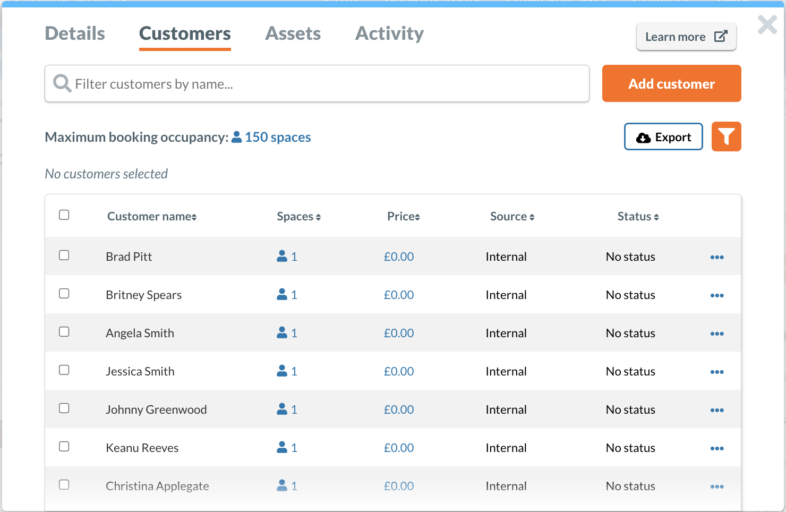
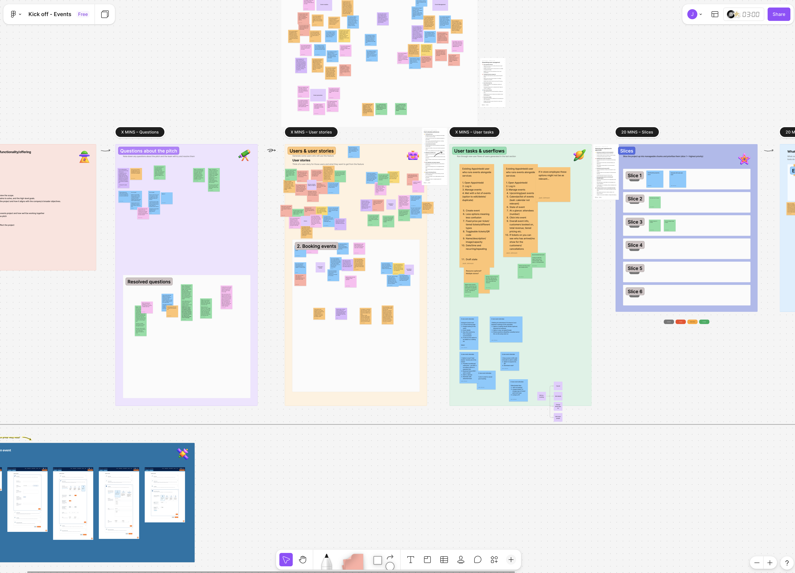
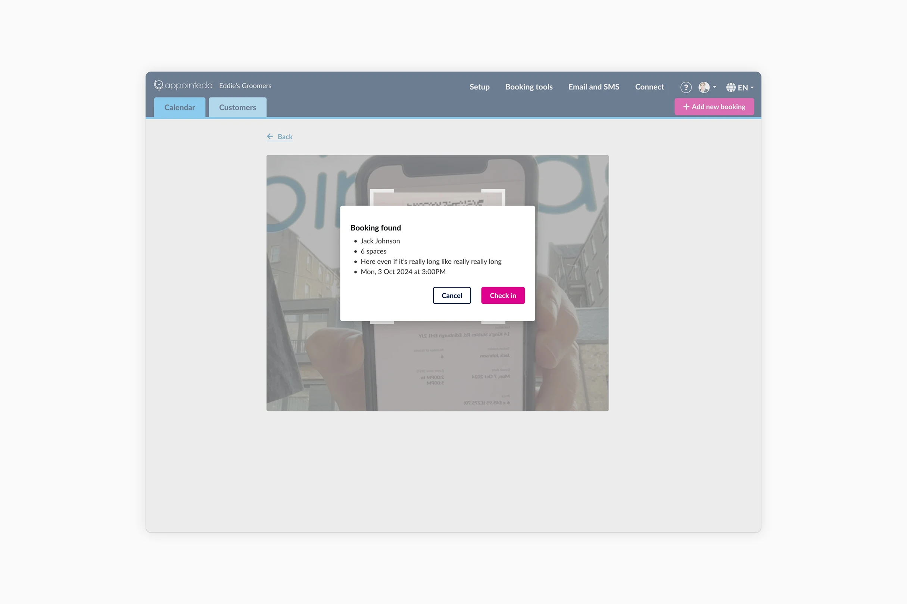
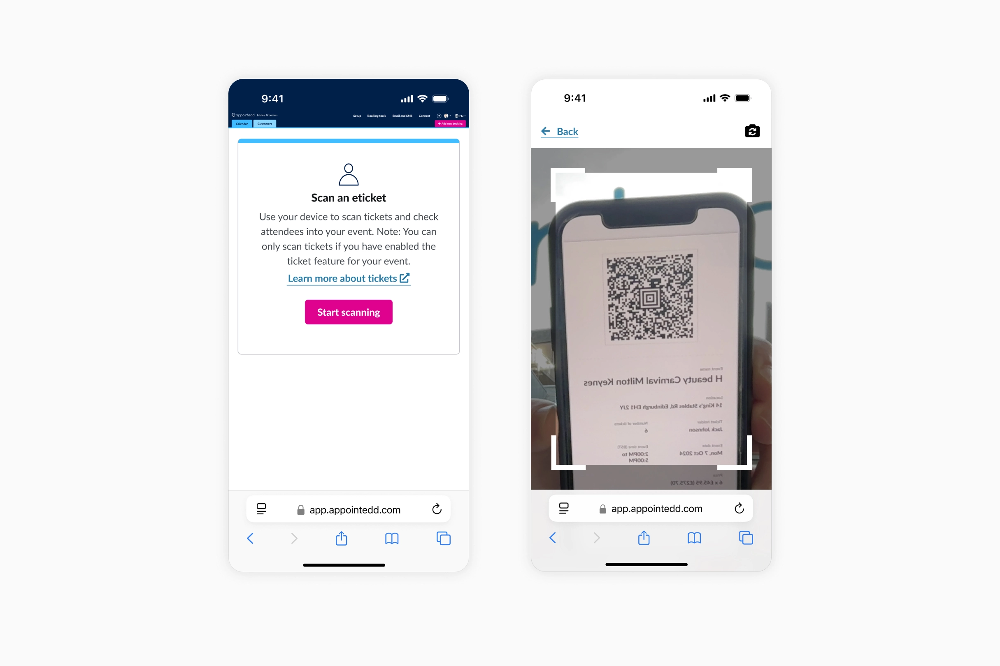
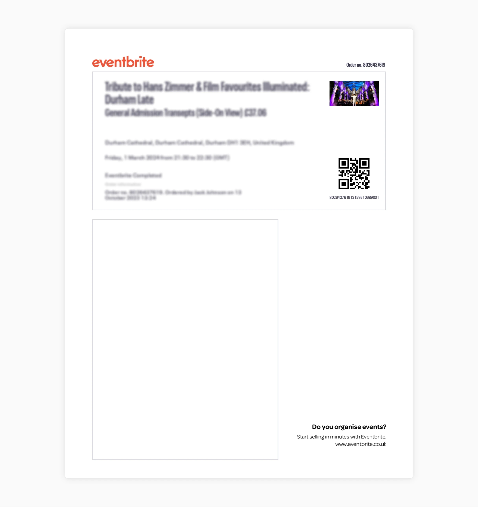
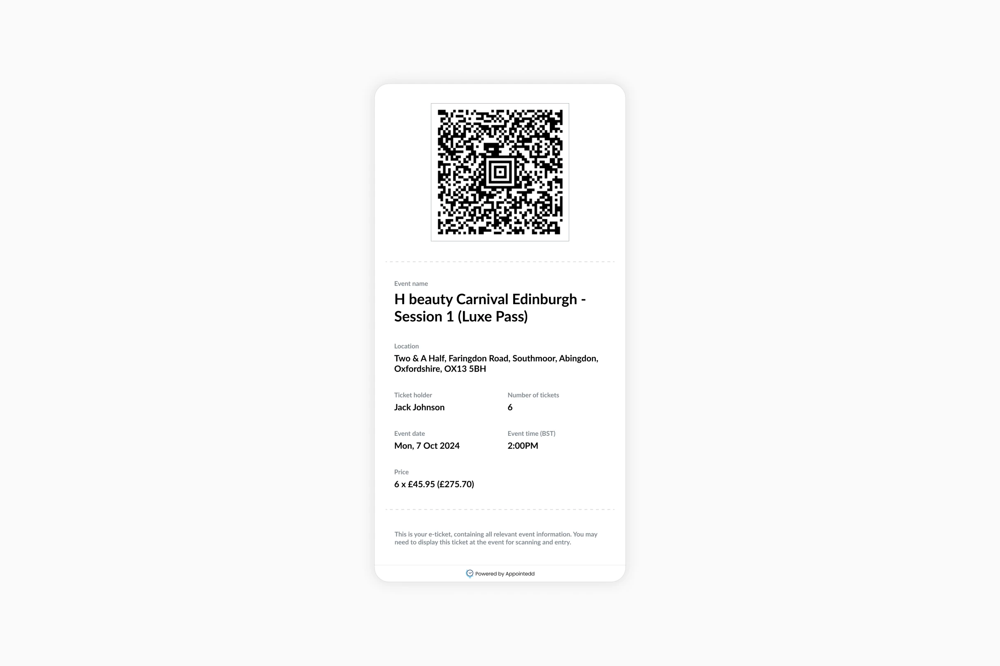
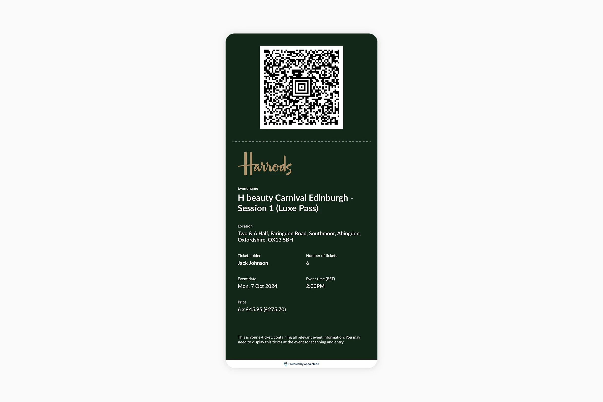

Don't have time to read it all?
I led the design lifecycle, from initial discovery to implementation for Appointedd’s new ticket generation and attendee check-in features. With unique QR-coded tickets, attendees can be quickly verified and checked in, helping to reduce wait times and keep event entry smooth and efficient.
- Business Value: We became a much bigger competitor and viable option to Eventbrite.
- Pilot Success: 37% of identified clients had adopted the functionality within the first month.1
- Client adoption: Enterprise clients including Harrods, Liberty London and Victoria’s Secret had expressed eagerness of using the new features for all upcoming events.
Context & objective
Appointedd is an enterprise online booking and scheduling platform. In late 2023 Eventbrite removed the ability to host events for free. , which created a market gap. We wanted to capitalize on this shift by improving Appointedd’s core event functionality to capture enterprise clients looking to move.
The problem
For clients hosting events through Appointedd, checking in attendees relied on a couple of different methods:
Manual platform searches: To successfully log an attendee on Appointedd, organisers had to manually search the system for their name and change their status to 'arrived'. During busy events, they frequently skipped this step and just checked confirmation emails at the door, artificially inflating "no show" metrics and rendering the event data completely unreliable.

Printed sheets: Exported lists from Appointedd were printed and kept at the door. This was inefficient and, more importantly, a poor brand experience for clients like Harrods or Liberty London.
Project kick off
I led the project kick-off with the core project team, C-Suite, and Customer Success Managers (CSMs). CSMs often set up events on behalf of enterprise clients, their product knowledge was invaluable for helping us define initial requirements.

Analysing the competitors
I analysed the leading competitors in the sector including Eventbrite, AllEvents, Ticketmaster, Luma and many more. I also completed a SWOT analysis of each one and began to understand their strengths and weaknesses.
Speaking to the experts
We began speaking with clients who currently host events through Appointedd. I then held moderated user interviews with companies across retail, luxury, and finance including AND Agency, Society Matters, Holyrood Communications, White and Mackay, Harrods, Charlotte Tilbury, and others to map their workflows and frustrations. Their insights shaped a lot of the requirements:
- They wanted to verify ticket info and manually confirm check ins
- They needed to be able to log in to the Appointedd platform and start scanning immediately
- Employees could use personal devices if needed to access the ticket scanner
Researching ticket designs
I looked beyond the event space to rail and air travel for inspiration, borrowing established design patterns to ensure tickets felt familiar. To test legibility, I ran rapid mobile tests by emailing PDF prototypes to various devices, identifying any display issues before they moved to production.
Navigating technical constraints
Appointedd is built on quite a complex foundation of legacy code. The primary challenge our developers had to navigate was discovering how straightforward it would be to hook automated ticket scanning into the existing event management tools.
To mitigate any potential risk, I established a regular meeting cadence with the team. These meetings included ticket refinements, open design feedback and daily check-ins. This ensured alignment between the design vision and technical feasibility.
Introducing digital ticket and scanning
Clients could now issue automatic tickets directly via Appointedd. With unique QR-coded tickets, attendees can be quickly verified and checked in, helping to reduce wait times and keep entry smooth and efficient.


Clients could now issue automatic tickets directly via Appointedd. With unique QR-coded tickets, attendees can be quickly verified and checked in, helping to reduce wait times and keep entry smooth and efficient.

Clients could now issue automatic tickets directly via Appointedd. With unique QR-coded tickets, attendees can be quickly verified and checked in, helping to reduce wait times and keep entry smooth and efficient.

Timecode anxiety and local time
I maintained the platform's standard Europe/London (GMT) formatting for the digital tickets. This kept the ticket information consistent with confirmation emails. Those emails also feature an "Add to Calendar" integration which adds the event time to your device and handles the automatic local time conversion. This approach provided a static source of truth on the ticket without losing the convenience of local scheduling for attendees.

Strategic roadmap and scoping
Speed was of the utmost importance to capitalize on the Eventbrite market shift. By inserting this new functionality directly into the current event creation journey, we achieved a much shorter release timeline.
To ensure we were stayed on track for the launch date, I consciously deferred features like custom ticket design and digital wallet integration to Phase 2, trading 'nice to have' features for project quickness.

To ensure we were stayed on track for the launch date, I consciously deferred features like custom ticket design and digital wallet integration to Phase 2, trading 'nice to have' features for project quickness.